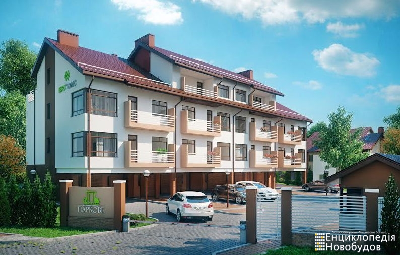

Котеджне містечко Паркове, Львів, Янева
Основна інформація
Поруч парк та озеро
Кількість котеджів 29
Офіційний сайт http://parkove1.ekopolis.com.ua
Телефон (032) 235 43 23 , 242 27 70, (067) 691 11 88
Адреса м. Львів, вул. Янева 10
Забудовник Екополіс
Додатковий опис: Для створення мальовничого ансамблю поблизу парку «Горіховий гай» запроектовано будинки котеджного типу та малоповерхові будинки на 6, 10 та 12 квартир. Котеджі типу «А» і «Б» - двоповерхові, з вбудованим гаражем, зблоковані у групи по 2-3-4 будинки. За кожним котеджем закріплена прибудинкова земельна ділянка. У багатоквартирних будинках пропонуються одно -, двох -, трьох - та чотирьохкімнатні квартири з терасами. У котеджному містечку планується спорудити дитячий майданчик, гостьові стоянки, буде централізована охорона, обслуговування загальної території, вивіз сміття.